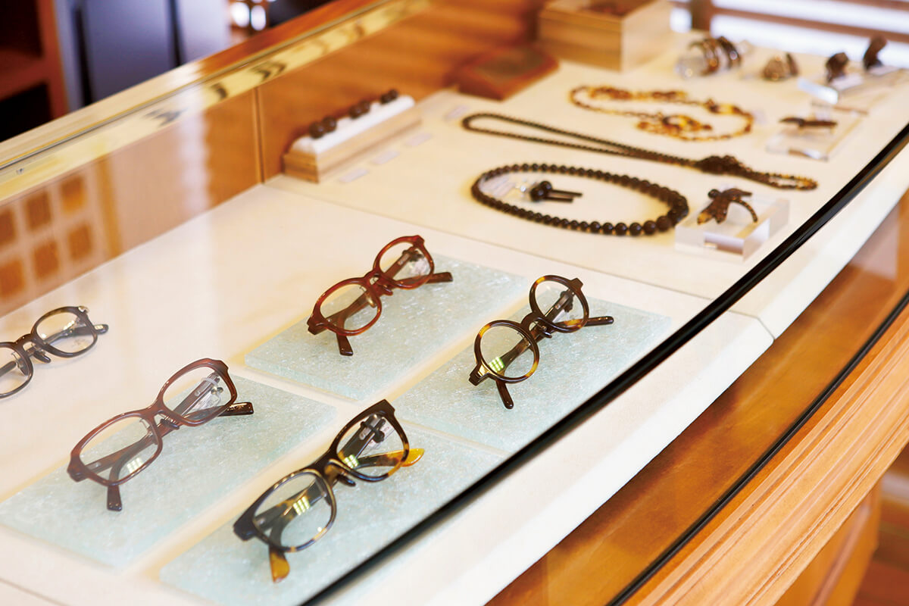
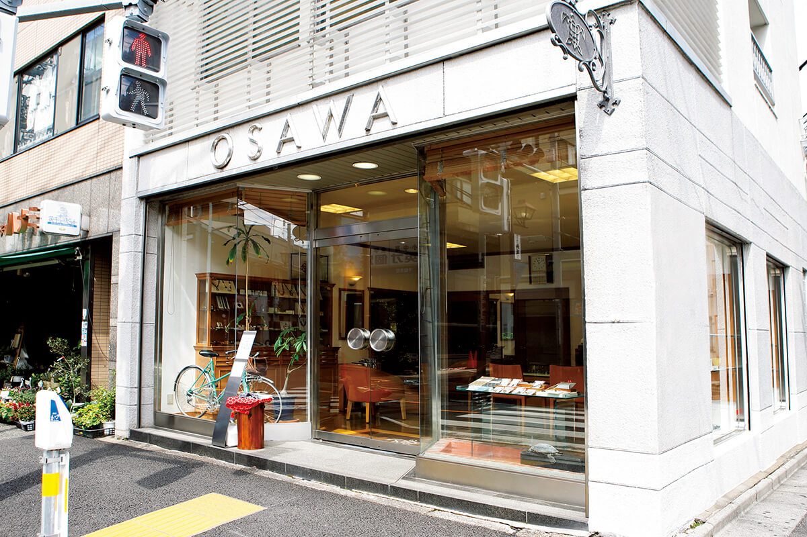
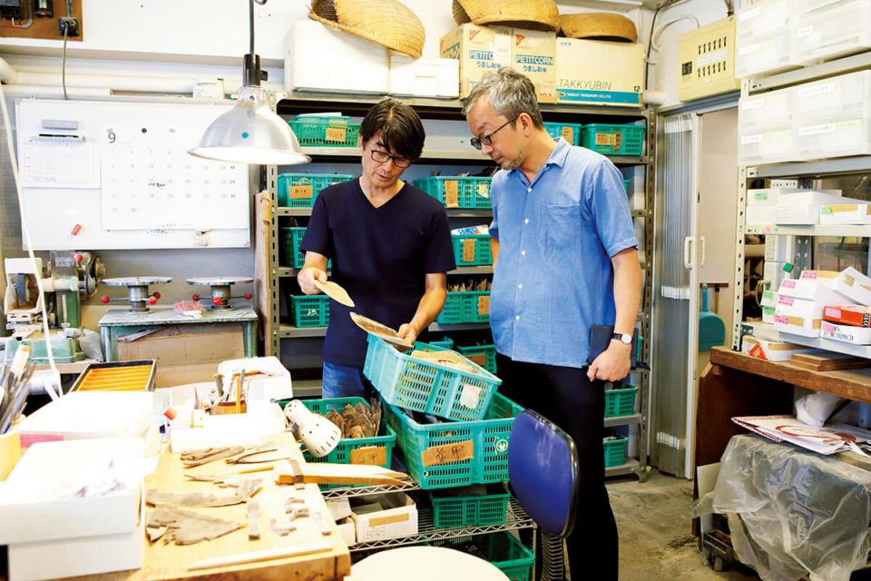
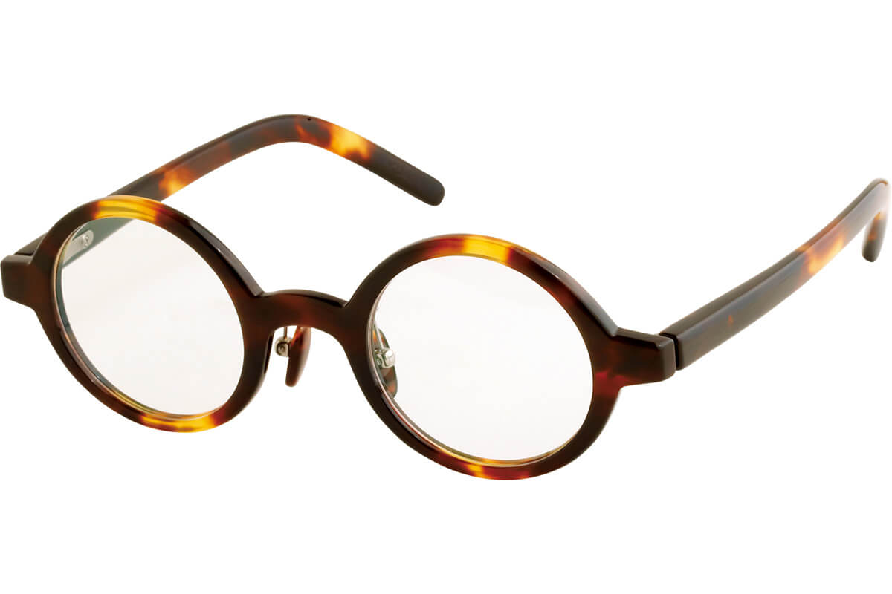
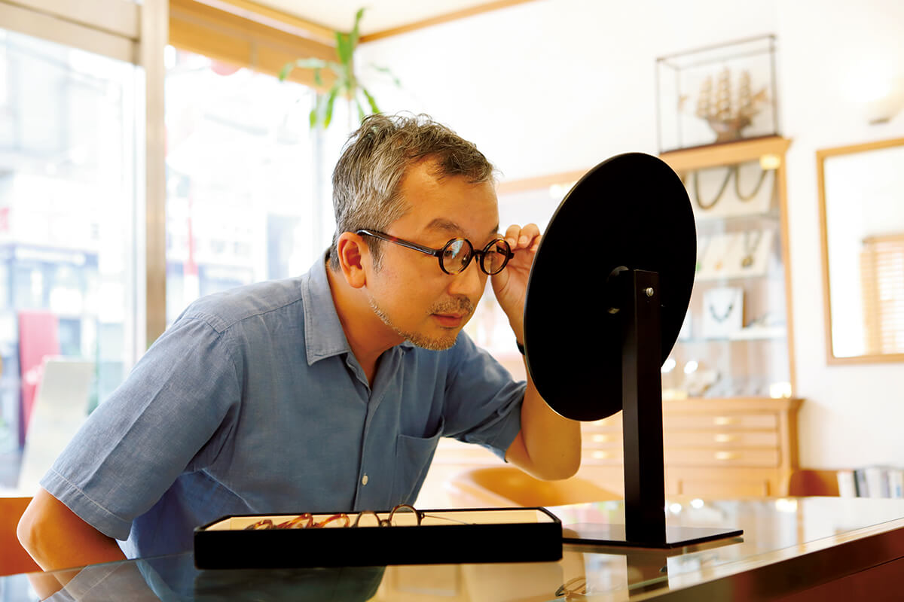

Токио · Сэндаги · мастерская
«Осава бэкко»: очки из черепахового панциря в старом квартале Сэндаги

Черепаховые очки многие представляют на носу у пожилого политика или директора крупной компании. В мастерской «Осава бэкко» в токийском Сэндаги их делают вручную с 1956 года и доказывают, что этот материал совсем не старомоден.
Место
Магазин с черепахой на вывеске
Янака, Нэдзу и Сэндаги, три старых квартала Токио, вместе называют Янэсэн. Здесь сохранилось много старых улиц, и за атмосферой прежнего «нижнего города» сюда едут и токийцы, и путешественники. В двух минутах ходьбы от станции Сэндаги стоит «Осава бэкко», специализированный магазин очков из черепахового панциря.

Мастерскую основали в 1956 году. Всё, что продаётся внизу, делают этажом выше, в собственной мастерской: вручную, силами опытных мастеров.

История
Панцирь, который любил Иэясу
Изделия «бэкко» делают из панциря бисы, морской черепахи. У этого ремесла долгая история: панцирем украшена пятиструнная лютня бива из сокровищницы Сёсоин в Наре. Но по-настоящему в Японии ремесло расцвело в начале эпохи Эдо, когда сюда пришла особая техника склеивания пластин панциря и из него стало возможно делать сложные формы. Говорят, черепаховые очки носил в последние годы жизни сам Иэясу Токугава (1543–1616), основатель сёгуната, который правил Японией больше двух с половиной веков.
Мастер
Чтобы ремесло стало традицией
Глава «Осава бэкко» сам работает мастером и не скрывает, что когда-то вещи поколения отца тоже казались ему старомодными.
«Если не делать того, что подходит своему времени, такую работу не продолжить. И, может быть, именно так в итоге и получается традиция»
глава мастерской «Осава бэкко»
Так мастерская и работает: здесь придумывают собственные модели в духе времени и делают совместные коллекции с известными марками очков.

Примерка
Материал, который чувствуешь кожей
Автор рубрики носит очки почти сорок лет, перепробовал множество оправ, но так и не нашёл свой стиль. В «Осава бэкко» ему дали примерить черепаховые очки. У них мягкий блестящий цвет, какой бывает только у природного материала, и тонкая фактура, а оправа очень приятно ложится на кожу. С пластиковой оправой не сравнить: в этих очках есть благородство. Автор признался, что, похоже, нашёл очки, которые достойны остаться с ним до конца жизни.

«Осава бэкко»
- Адрес
- Токио, район Бункё, Сэндаги, 3-37-15
- Телефон
- +81 3-3823-0038
- Часы работы
- 9:00–18:00, в субботу до 17:00
- Выходные
- воскресенье, праздники
Фото: Маки Судзуки.